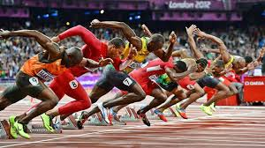

Athletics is a group of sporting events that involves competitive running, jumping, throwing, and walking.[1] The most common types of athletics competitions are track and field, road running, cross country running, and racewalking. The results of racing events are decided by finishing position (or time, where measured), while the jumps and throws are won by the athlete that achieves the highest or furthest measurement from a series of attempts. The simplicity of the competitions, and the lack of a need for expensive equipment, makes athletics one of the most common types of sports in the world. Athletics is mostly an individual sport, with the exception of relay races and competitions which combine athletes' performances for a team score, such as cross country. Organized athletics are traced back to the Ancient Olympic Games from 776 BC. The rules and format of the modern events in athletics were defined in Western Europe and North America in the 19th and early 20th century, and were then spread to other parts of the world. Most modern top level meetings are held under the auspices of World Athletics, the global governing body for the sport of athletics, or its member continental and national federations. The athletics meeting forms the backbone of the Summer Olympics. The foremost international athletics meeting is the World Athletics Championships, which incorporates track and field, marathon running and race walking. Other top level competitions in athletics include the World Athletics Cross Country Championships and the World Half Marathon Championships. Athletes with a physical disability compete at the Summer Paralympics and the World Para Athletics Championships. The word athletics is derived from the Ancient Greek ἀθλητής (athlētēs, "combatant in public games") from ἆθλον (athlon, "prize") or ἆθλος (athlos, "competition").[2] Initially, the term described athletic contests in general – i.e. sporting competition based primarily on human physical feats. In the 19th century, the term athletics acquired a more narrow definition in Europe and came to describe sports involving competitive running, walking, jumping and throwing. This definition continues to be prominent in the United Kingdom and the former British Empire. Related words in Germanic and Romance languages also have a similar meaning. In much of North America, athletics is synonymous with sports in general, maintaining the historical usage of the term. The word "athletics" is rarely used to refer to the sport of athletics in this region. Track and field is preferred, and is used in the United States and Canada to refer to athletics events, including racewalking and marathon running (although cross country running is typically considered a separate sport). More info in wikipedia
The best athletes in sprint distances:
The largest stadiums for track and field - site
